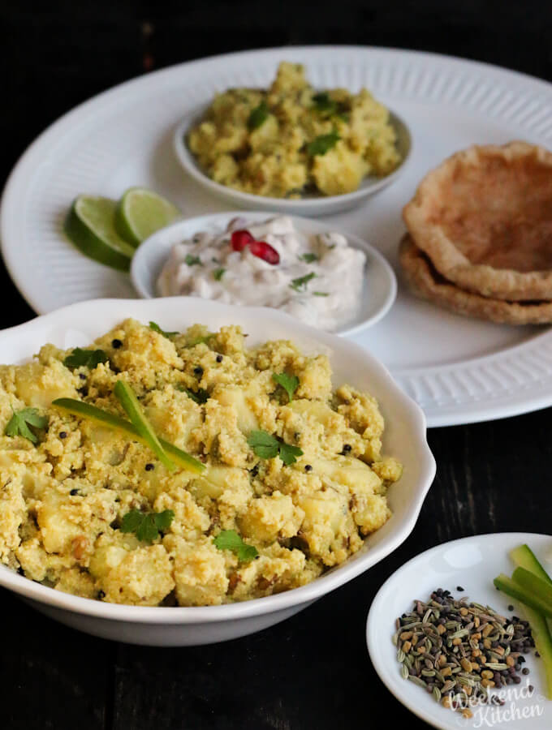
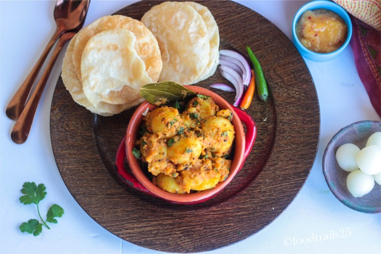
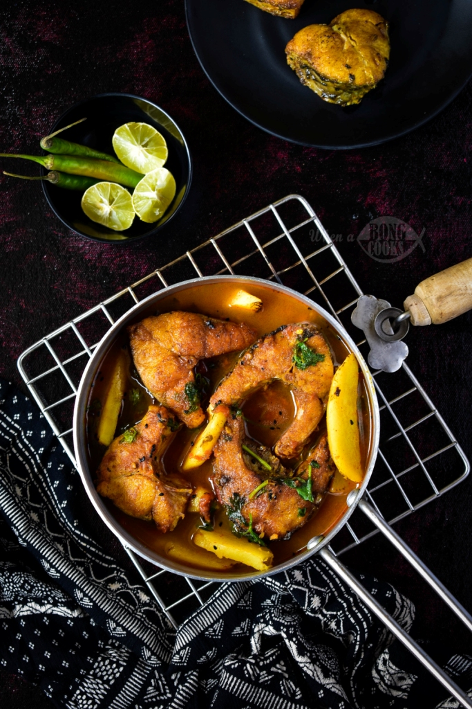
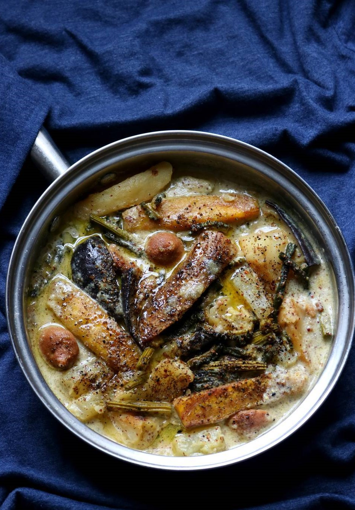
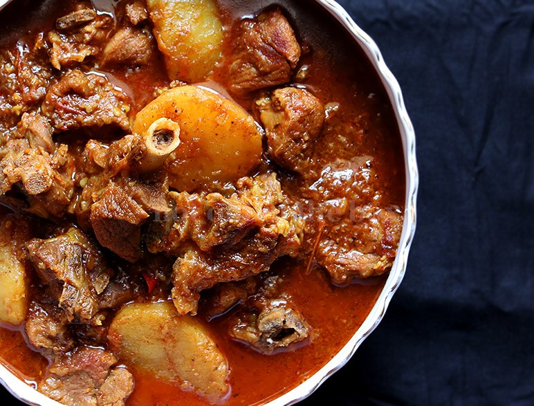

hey FooDies!! Welcome to FooDland..
bengal is all about food and happyness.Bengal is known as the land of 'Maach aar Bhaat’ which means ‘fish and rice'.West Bengal is not just about machh bhaat and the sweets. It has a lot more to it and is a haven for both vegetarian and non-vegetarian foodies. so here is 5 delicious,mouth melting bengali dishes for you. he he! enjoy yor food.
Alu posto is a classic Bengali dish. Sparing in its use of spices, this preparation relies on the flavours of potatoes, green chillies and nigella seeds for its taste. What stands out, however, is the nutty flavour of the roasted poppy paste, which also provides body and texture to the gravy. This apparently bland looking dish with just potato and posto is capable of rousing much passion among Bengalis. Although alu posto is cooked without onion or garlic, in our family we sometimes add a little fried onion to the alu posto for a pleasant variation.
Luchi recipe with step by step photos – luchi is loved by many foodies. To enjoy luchi you have to be a real foodie otherwise the idea of Poori made with all purpose flour and deep fried in ghee will always be at the back of your mind and you won’t be able to enjoy these delicious fried bread from bengal.You must try this delicious Bengali Aloo Dum Recipe where the potatoes that are simmered in spicy tomato onion garlic and a yogurt gravy. Serve along with Luchi and Begun Bhaja for a weekend lunch or dinner.
Macher Jhol is a Bengali Fish curry prepared with Aar/Rohu/Katla etc fish. The gravy is such an uncomplicated gravy which can be prepared in a jiffy with the items available in the pantry and tastes best with Steamed white rice. Vegetables like Potato and Brinjal can be added in addition to the fish to enhance the taste and aroma of the curry. Made in every Bengali Household, it is perfect for our everyday meals. Serve this tasty and easy to make Aar Macher Jhol along with Steamed Rice and Begun Bhaja for your everyday meals.
“ছি ছি ছি রানী রাঁধতে শেখেনি… শুক্তনিতে ঝাল দিয়েছে অম্বলেতে ঘি!” the famous Bengali Song depicting how to cook Shukto properly.Sukto is a vegetable medley prepared in Bengali household. It consists an array of vegetables. Bitter gourd is the main ingredient of this dish and the other vegetables in this recipe are pumpkin, plantain, sweet potato, ridge gourd, drumsticks, eggplant and raw papaya. Dried lentil dumplings (badi) is also a important ingredients for making sukto.Serve Sukto along with Steamed Rice for your weekday lunch.
Khasir Mangsho is mutton curry but the speciality of Bengali Khasir jhol is Alu.It is a Bengali Mutton curry which is perfect for your weekend meals. The red coloured gravy with plump big potatoes is added attraction. And also adding freshly ground spice powders enhances a natural flavour to the curry. Serve the mutton curry along with steamed rice or roti or with luchi also.This can be a perfect meal for sunday dinner or lunch
